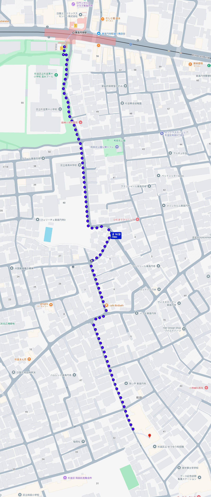
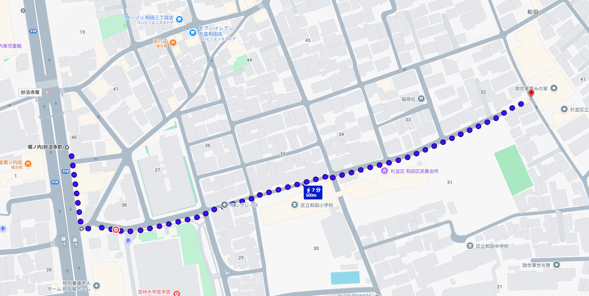
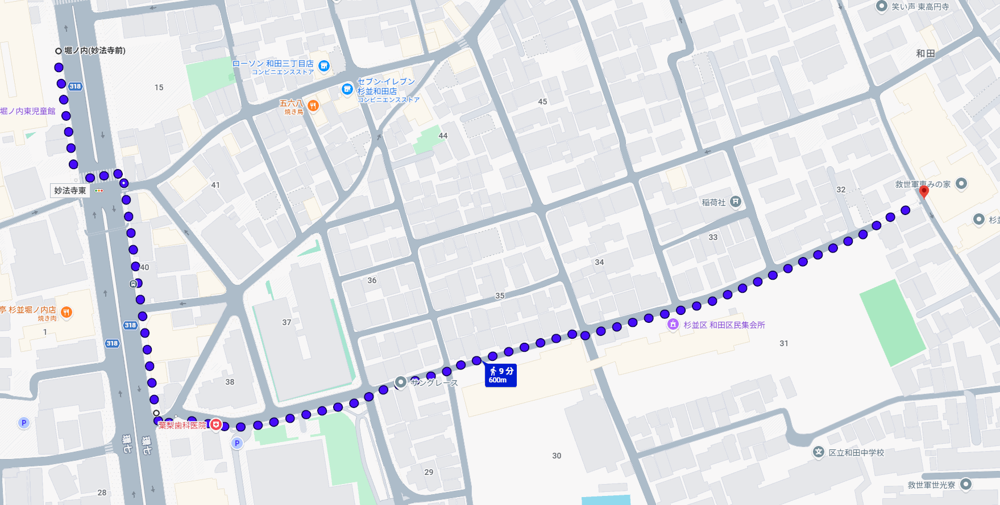

印は降車する駅・停留所
1地下鉄
- 降車駅
- 東高円寺（新宿から 7 分）
- 徒歩
- 駅から 10 ～ 15 分（経路図１）

経路図１：駅から徒歩 10 ～ 15 分
2バス
いずれも「堀ノ内（妙法寺前）」で降車
① 新宿駅から
- のりば
- 「新宿駅西口」 9 番のりば
- 系統
- 宿 91 （新代田駅前ゆき）
- 運行会社
- 都営バス
- 乗車
- 約 21 分
- 降車
- 堀ノ内（妙法寺前）
- 徒歩
- バス停から 7 ～ 10 分（経路図２）
② 阿佐ヶ谷駅から
- のりば
- 「阿佐ヶ谷駅前」
- 系統
- 渋 66 （渋谷駅前ゆき）
- 運行会社
- 都営バス・京王バス
- 乗車
- 約 13 分
- 降車
- 堀ノ内（妙法寺前）
- 徒歩
- バス停から 7 ～ 10 分（経路図２）

経路図２：バス停から徒歩 7 ～ 10 分
③ 渋谷駅から
- のりば
- 「渋谷駅前（西側）」
- 系統
- 渋 66 （阿佐ヶ谷駅前ゆき）
- 運行会社
- 都営バス・京王バス
- 乗車
- 約 32 分
- 降車
- 堀ノ内（妙法寺前）
- 徒歩
- バス停から 9 ～ 13 分（経路図３）

経路図３：バス停から徒歩 9 ～ 13 分